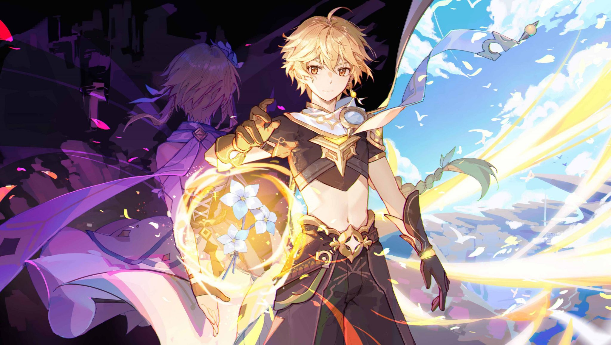

Genshin Impact team composition guides

News regarding 3.4 update Find here!
Genshin Impact is an open-world action RPG where you set forth on a journey across a fantasy world called Teyvat, released in September 2020.
There are four nations avaliable at the moment and game up to 3.3 update counts 59 playable characters, each assigned one of five elements and four weapon types.
Genshin allows players to create and share their team compositions with others.
Team building is one of the most important parts of the game, thanks to the game's focus on elemental reactions and elemental resonance.
Our website offers easy guides to creating functional teams for world exploration or clearing Abyss floors.
Reach us on: